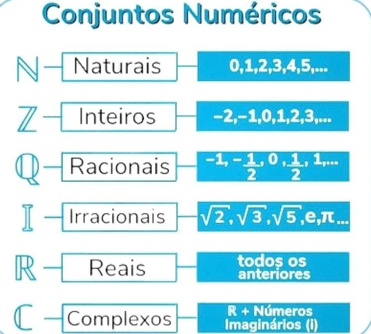

(EM13MAT313): Utilizar, quando necessario, a notacao cientifica para expressar uma medida, compreendendo as noçoes de algarismos significativos e algarismos duvidosos, e reconhecendo que toda medida e inevitavelmente acompanhada de erro.
(EM13MAT314): Resolver e elaborar problemas que envolvem grandezas determinadas pela razão ou pelo produto de outras (velocidade, densidade demográfica, energia elétrica etc.).
(EM13MAT316): Resolver e elaborar problemas, em diferentes contextos, que envolvem cálculo e interpretação das medidas de tendência central (média, moda, mediana) e das medidas de dispersão (amplitude variancia e desvio padrao).
(EM13MAT103) Interpretar e compreender textos cientificos ou divulgados pelas mídias, que empregam unidades de medida de diferentes grandezas e as conversões possíveis entre elas, adotadas ou não pelo Sistema Internacional (SI), como as de armazenamento e velocidade de transferência de dados, ligadas aos avanços tecnológicos.
(EM13MAT104) Interpretar taxas e indices de natureza socioeconômica (indice de desenvolvimento humano, taxas de inflação, entre outros), investigando os processos de cálculo desses números, para analisar criticamente a realidade e produzir argumentos.
